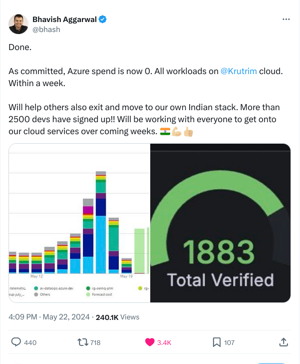
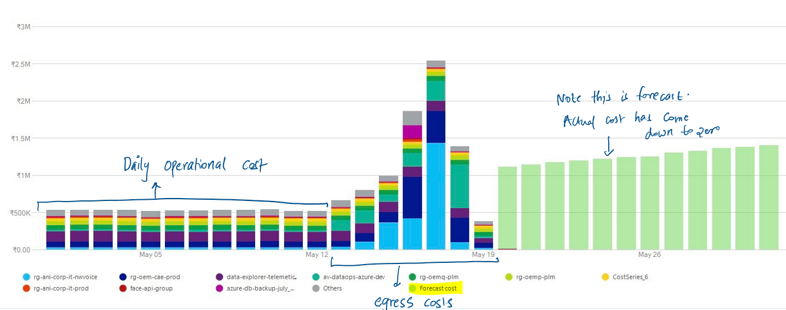

Why Ola is Moving On Prem: Cloud and its Costs¶
Author: Sasank Chilamkurthy
Ola’s CEO, Bhavish Aggarwal, stirred up a controversy when he posted that he will migrate away from Public cloud, Azure to his own setup over a spat on Linkedin. He got ridiculed by many ‘experts’ of the industry that he can not actually execute this. Some applauded the courage it takes to make this move. A few days later, he posted a tweet with screenshot where he did migrate away from Azure in a matter of a week. This tweet contained key billing information that made me go down the rabbit hole.

In this post, we will analyze the numbers from this tweet in a detailed manner. Controversy aside, we will see how this move is extremely financially sound. By the end of this post, you will see that, even you can do your own cloud-exit with not too much cost and pain.
Background: Cloud and AI¶
First of all, let’s start with an understanding of what does Azure do. Azure is Microsoft’s behemoth public cloud service. Amazon Web Services, commonly referred to as AWS, also comes under the same category of public cloud. These services are somewhat similar to ‘cloud’ services like Dropbox or Google Drive that we likely are familiar with, but much more advanced.
Let’s break down how Dropbox or Google Drive works. You have a few files in your laptop that you want to access on your other desktop computer. But the way internet works right now, you can not actually access these files directly from your laptop. You need an intermediary who actually stores these files in a computer that’s accessible from internet. This computer will be kept turned on and always connected to network so that you can access it anytime. You put many such computers together, you basically get cloud.
Cloud, therefore, is just a collection of computers connected to constant power and network. Just like in Dropbox, you never actually see these computers when you are using them. You just access them remotely via your phone or laptop. AWS and Azure provide remote access to computers so startups can build applications just like Dropbox. Slack, for example, is another popular application that is hosted on AWS. When you send a message on Slack application, it gets stored on Slack’s servers on AWS and then it’s shown to your teammates.
These huge clusters of computers is how AI systems like ChatGPT get created. ChatGPT took in data that’s available to them from the whole internet, put them in big computer machines and made computers talk like the text on internet. Internet data is widely accessible to anyone who’s on it but computers are not. Companies who have these computers, specially with AI chips/GPUs, are able to take advantage of these models. People who do not have access to these computers, called GPU-poor, risk getting left behind.
Costs of Cloud¶
How do you pay to Cloud? You pay rent just like how you do for your apartment. That is unlike owning computers, you are renting computers. Over the last few years, cloud has become quite expensive. Let’s go back to Ola and see how they are spending to host their applications on Azure. We have this information from Bhavish’s tweet on Azure billing. Here’s the annotated version of that image.

What we see here is how much Ola has been paying for Azure each day. To understand what’s going on here, we need to breakdown the figure into two parts: operational cost and egress cost. Let’s start with operational cost.
Operational costs¶
Operational cost is how much Ola is paying to Azure for normal daily operations. From the figure we can see that it is 500K INR or 5 lakhs rupees per day. It remains constant until May 12 which is when Bhavish announced he’s moving out of Azure. It’s reasonable to assume that this is what Bhavish has been spending for past few years. Let’s use this figure to compute total spend:
Operational cost (all in INR):
Daily spend = 5 lakhs
Monthly Spend = 5 * 30 = 150 lakhs
Yearly Spend = 150 * 12 = 1800 lakhs = 18 crores
3 year spend = 18 * 3 = 54 crores
I computed 3 year spend because that’s the reasonable life of a computer. So, in form of rents, Ola is paying 54 crores over useful period of a computer. We will later compute how much it will cost if you buy these computers instead of renting them.
Egress costs¶
Starting May 12, Ola started the migration out of Azure. We would expect the cloud costs to taper down to zero over next week. Surprisingly, we actually see a spike of costs from May 12 to May 19. So what’s happening? When you want to migrate out of cloud, you have to move your data from Azure’s computers to your own. Azure charges for this data transfer and it’s called egress costs.
I have computed egress costs by adding up all the costs in the chart during the migration period. It comes out to be 85 lakhs INR. I am not, of course, counting cost of Ola engineers’ time to do the migration. This is sort of a penalty you have to pay Azure for moving out of them. It’s like your landlord forcing you to pay few month’s rent when moving out of an apartment.
Once the migration is done, you can see the costs comes down to zero. However the Azure billing above still shows bars but that’s just a forecast (wishful thinking that Bhavish will come back haha).
Conclusion¶
In this post, we have understood that cloud is just a collection of computers with power and network. We saw that you pay for cloud by paying rent for these computers. We then analyzed Ola’s spend on Azure. From our calculations, it looks like Ola is spending 18 crores INR per year on Azure cloud and paid 85 lakhs when they wanted to migrate out of it. The cost structure paint a high-maintenance and somewhat abusive relationship. It’s no wonder why Ola wants to breakup with Azure.
Knowing just these costs is not enough. We will want to evaluate an alternative to renting computers: buying computers. In a future post, we’ll examine how much it will cost for Ola to buy computers for their workloads.